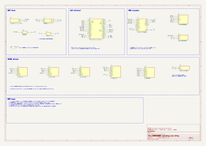

自駕車電子元件建議方案
把差速轉向車改裝成可以自己循線、避障、看車道的自駕模擬車：先列出必備的主控、驅動與電源，再依目標分級選感測器，最後分四個階段實作。
160 mm軸距（Wheelbase）
32.3° ／ 25.9°轉向打到底：內輪／外輪
≈ 291 mm最小轉彎半徑（後軸中點）
TT 馬達 × 1經差速器驅動兩後輪
車上已有的零件
- 驅動：TT 減速馬達 × 1 → 小齒輪 → 傘齒輪差速器 → 兩後輪（電動差速器）
- 轉向：MG90S 伺服機 → 曲柄 → 兩支拉桿，阿克曼梯形（理論分析）
- 電源：兩側各一個 18650 電池座，掛在麵包板底座兩端（2 顆串聯 7.4 V）；原本的 3 × AAA 電池盒已拿掉
- 電路：半尺寸 400 孔麵包板，裝在車頂的 Technic 底座上
結論：機構已經和真車一樣（後驅＋前輪阿克曼轉向），只要再加主控板、馬達驅動、電源、感測器四類元件。
系統架構
電源
2 × 18650 串聯7.4 V，附保護板（BMS）＋開關
5 V／3 A 降壓模組供 ESP32、伺服機、感測器
大腦
ESP32 DevKit V1PWM、I²C、WiFi／藍牙
感測器循跡、ToF、IMU、編碼器、攝影機
電腦（選用）WiFi 接收影像、跑 OpenCV
致動
TB6612FNG → TT 馬達VM 直接接 7.4 V，控制車速與正反轉
MG90S 伺服機50 Hz PWM 控制轉向角
一、必備元件：讓車能自己動
| 類別 | 建議元件 | 理由 |
|---|---|---|
| 主控板 | ESP32 DevKit V1（30 腳） | 內建 WiFi／藍牙，可把感測資料傳到電腦、從手機或電腦下指令；PWM 和 I²C 腳位夠用。插上 400 孔麵包板兩側只剩約 1 排孔，接線較擠 |
| 馬達驅動 | TB6612FNG | 只用 A 通道驅動 TT 馬達；連續 1.2 A、峰值 3.2 A，模組小可直插麵包板，壓降遠小於 L298N |
| 轉向 | MG90S（已有） | 50 Hz PWM，脈寬控制角度 |
| 電池 | 2 × 18650 串聯＋保護板 | 7.4 V，容量 2500～3000 mAh；取代 3 × AAA（見下方電源規劃） |
| 降壓 | 5 V／3 A 降壓模組 例：MP1584、Mini560 | 供伺服機與 ESP32；伺服機堵轉電流大，要留餘裕 |
| 雜項 | 電源開關、470～1000 µF 電解電容、杜邦線、XH 接頭 | 電容並在伺服機電源旁，避免轉向瞬間電壓下降讓 ESP32 重開機 |
二、電源規劃
- 3 × AAA 只有 4.5 V，伺服機卡住時電流 0.7 A 以上，電壓一掉 ESP32 就會重開機
- 改用 2 × 18650（7.4 V）：TB6612 的 VM 直接接電池，伺服機和邏輯電路走降壓後的 5 V
- TT 馬達額定 3～6 V：程式把 PWM 上限設在 約 70 %（平均約 5.2 V），避免過壓
- 車上已改成兩側各掛一顆 18650（兩顆約 90 g），導線從電池座四角的出線口拉到麵包板；另有雙顆並排的 Technic 底座可選
| 負載 | 電源 | 平常 | 峰值 |
|---|---|---|---|
| ESP32（WiFi 開） | 5 V | 約 0.25 A | 約 0.5 A |
| MG90S 伺服機 | 5 V | 0.1～0.3 A | 約 0.7 A（堵轉） |
| 感測器（ToF × 3、IMU、循跡） | 3.3／5 V | 約 0.1 A | 約 0.1 A |
| ESP32-CAM（選用） | 5 V | 約 0.2 A | 約 0.3 A |
| 5 V 合計 | 約 0.7 A | 約 1.6 A → 選 3 A 降壓 | |
| TT 馬達 | 7.4 V（經 TB6612） | 0.15～0.3 A | 1 A 以上（起步／卡住） |
電流為常見規格的估計值，實際以各模組資料表與實測為準。
三、自駕感測器：依目標分級
| 等級 | 目標 | 元件 | 說明 |
|---|---|---|---|
| 入門 | 循黑線 | 5 路紅外線循跡模組 TCRT5000 | 裝在車頭下方，離地約 1～2 cm；用 PID 算轉向角 |
| 入門 | 避障 | VL53L0X／VL53L1X ToF 測距 × 3 | 前、左前、右前各一；I²C、3.3 V，比 HC-SR04 超音波小也準。三顆同位址，用 XSHUT 腳開機時逐一改位址 |
| 進階 | 航向、里程 | MPU6050（或 BNO085）IMU ＋附編碼器的 TT 馬達 | 編碼器在差速器前的馬達軸上，量到的是兩後輪的平均速度，正好用來算里程（Odometry）。換編碼器馬達前要檢查驅動模組空間 |
| 進階 | 車道辨識 | A：ESP32-CAM B：Raspberry Pi Zero 2 W ＋ Camera Module 3 | A 最便宜：影像用 WiFi 傳到電腦跑 OpenCV，再回傳轉向指令。B 在車上直接辨識，但 5 V 要供到 2.5 A |
| 高階 | 建圖、定位 | LD06／LD19 2D 光達 | 裝在車頂，做 SLAM；需要 Raspberry Pi 等級的電腦處理 |
四、ESP32 腳位建議
| 功能 | 元件腳位 | ESP32 GPIO |
|---|---|---|
| 轉向 | MG90S 訊號線 | 13 |
| 馬達 | TB6612 PWMA ／ AIN1 ／ AIN2 | 25 26 27 |
| 馬達 | TB6612 STBY | 33（或直接接 3.3 V） |
| I²C 匯流排 | SDA ／ SCL（ToF × 3、MPU6050） | 21 22 |
| ToF 位址設定 | XSHUT × 3 | 4 16 17 |
| 循跡 | 5 路數位輸出 | 32 34 35 36 39 |
| 編碼器 | A 相 ／ B 相 | 18 19 |
- 避開開機設定腳（Strapping Pins）
0251215，以免接上感測器後開不了機 34353639只能輸入、沒有內部上拉，適合接循跡模組（模組自帶上拉）- ESP32 腳位是 3.3 V：感測器盡量接 3.3 V 供電；若用 HC-SR04（5 V），Echo 腳要加分壓電阻
- TB6612：VCC 接 3.3 V（邏輯），VM 接 7.4 V 電池，GND 全部共地
五、接線圖（KiCad）

- 電源：2 × 18650 經開關成 +BATT（7.4 V）→ TB6612 VM；降壓模組輸出 +5V → ESP32 VIN、伺服機、ESP32-CAM；ESP32 板上 3V3 → 所有感測器、編碼器、TB6612 邏輯
- 檢查：KiCad 電氣規則檢查（ERC）0 違規；匯出的網表和上方腳位表逐一比對相符。尚未實際接線驗證
- 下載：PDF（A3）、KiCad 專案 ZIP（電路圖、自訂模組符號庫、產生器
gen_schematic.py，用 KiCad 10 開啟autonomous_car.kicad_pro）
六、路徑規劃用的車輛參數
阿克曼轉向車可以簡化成單車模型（Bicycle Model）：前後各一個輪子，前輪轉角 δ。
轉彎半徑（後軸中點） R = L / tan δ
L = 160 mm，主銷距 w = 80 mm
打到底：內輪 32.3°、外輪 25.9° → R ≈ 291 mm
Pure Pursuit 轉向角 δ = atan( 2 L sin α / Ld )
α：車頭方向與「前視點」的夾角，Ld：前視距離
- 前視距離 Ld 建議從 2～3 倍軸距（約 30～50 cm）開始調；太短會左右擺，太長會切彎
- 伺服機角度和輪子轉角不是線性關係，可用阿克曼分析頁的四連桿解查表
- 迴轉時後輪外側半徑約 291 + 65 ≈ 356 mm（後輪距 130 mm），場地轉彎處要留夠寬
七、分階段實作
-
遙控車 第 1 階段
- 元件：ESP32、TB6612FNG、雙 18650、5 V 降壓、開關、電容
- ESP32 開 WiFi 網頁或藍牙，用手機控制車速與轉向；確認伺服機中位與左右極限角度
-
循線與避障 第 2 階段
- 元件：5 路循跡模組、VL53L0X × 3
- 循線用 PID 控制轉向；避障用狀態機：前方太近 → 減速 → 往空的一側轉
-
定位 第 3 階段
- 元件：MPU6050、附編碼器的 TT 馬達
- 編碼器算車速做定速控制；IMU 航向＋里程推算位置（Dead Reckoning），可以走指定路線
-
視覺車道追蹤 第 4 階段
- 元件：ESP32-CAM（或 Raspberry Pi Zero 2 W ＋ 攝影機）
- OpenCV 找車道線 → 算車道中心 → Pure Pursuit 算轉向角；之後可再試深度學習（如 Donkey Car 方式的行為複製）
機構面要配合的事
- 感測器支架：做成 LEGO Technic 相容，用 pin 插在底盤上，循跡模組在車頭下方、ToF 在車頭前緣、攝影機在車頂
- 18650 電池座：已完成，兩側各一個，用水平 2L 銷掛在麵包板底座兩端，開口朝外、換電池不用拆車
- 重心：電池座在兩軸之間、左右對稱，但高度在離地 64～103 mm，重心偏高；攝影機桅桿不要太高，轉彎先減速，避免翻車
- 麵包板配置：依接線圖排定 ESP32、TB6612 在 400 孔麵包板上的位置，感測器線材走底盤下方